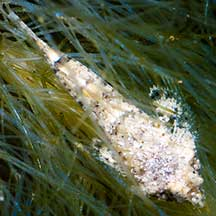
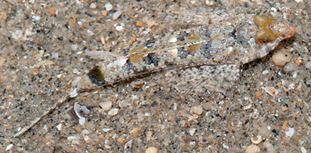
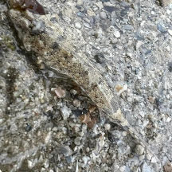
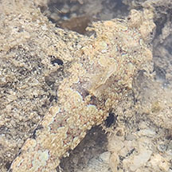

|
|
| fishes text index | photo index |
| Phylum Chordata > Subphylum Vertebrate > fishes > Family Callionymidae |
| Mosaic
dragonet Callionymus enneactis* Family Callionymidae updated Jan 2020 Where seen? This small fish with a camouflaging mosaic pattern is often seen in sandy areas near reefs on many of our Southern shores. Tiny ones sometimes seen among seaweeds. Features: Those seen 3-5cm. Body somewhat flattened. Head broad and flat with a narrow pointed mouth so that the head appears triangular when seen from above. It has a pattern of patches and bars of various shades of brown and white that matches the sandy areas where it is found. According to Ng, this species is distinguished from the other dragonets of Singapore in having a combination of a narrow snout, dark saddles on the body, and dark markings on the anal fin. Sometimes mistaken for flatheads (Family Platycephalidae). Here's more on how to tell apart fish with flat heads. |
 Tiny one among seaweeds. Sentosa, Apr 14 |
 Tanah Merah, Oct 09 |
| Mosaic dragonets on Singapore shores |
On wildsingapore
flickr
|
| Other sightings on Singapore shores |
 Terumbu Semakau, Apr 24 Photo shared by Kelvin Yong on facebook. |
 Beting Bemban Besar, May 24 Photo shared by Che Cheng Neo on facebook. |
||
| Acknowledgement Grateful thanks to Dr Ng Heok Hee for correcting the identification of these fishes. Links
References
|